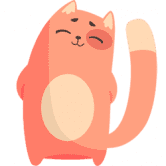 Kitty Farms Kitty Farms 是 BSC 上用于单产农业的去中心化解决方案，具有额外的机制来保护用户免受风险，因此您不必为高盈利能力而付出高昂的风险。用户将通过参与 KittySwap 上的流动
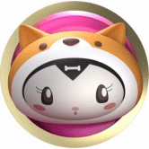 Kitty Inu 镇上有一只新的狗狗。 Kitty 是一种游戏和 NFT DeFi 协议，为 Play-to-Earn 和 Metaverse 生态系统提供动力。Kitty 的使命是建立最好的社区驱动的游戏和 NFT Defi 协议，并由 Defi 中最好的团
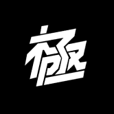 KIWAMI Genesis Kiwami 是一个包含 10,000 个化身的集合，适用于下一代艺术家、建设者和打破规则者的集体。精心设计的元节 &出生在日本的持有者可以获得独家的 Kiwami 产品，并
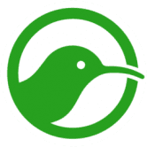 KIWI Wallet KIWI 钱包使用户能够在链下和链上进行快速、免费和私密的小额支付。 KIWI PoW 代币是一个社区项目，也是首批可开采的 ERC20/918 代币之一。没有预挖或 ICO。因此，它具
Kiyomi Finance POKI 最大供应量 80,00010% 转让税：1% 燃烧4% 用于农业POKICR 质押 5% 通货紧缩农业循环：耕种、转移、烧毁、再分配可变排放：农场收到的 POKI 总数除以 360000 块 基桥
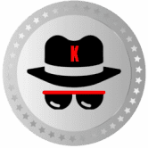 Klandestino Swap 什么是 Klandestino Protocole？ (KlandestinoSwap) Klandestino Swap 是一个去中心化的“DEX”交易所，用于交换币安链网络上推出的 BEP-20 代币。这是一个允许交易者、开发商和流动性提供
KlayMint KlaymMint 是一个 NFT 开放平台，提供基于 Klaytn 链的 NFT 铸币（销售）/购买/投资/交易服务。 在 KlayMint 中使用 NFT 铸币服务时，您可以选择“稀有度（等级）”选项，项目/公司
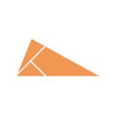 KLAYswap KLAYswap 是一个完整的链上即时交换协议，与链上流动性池一起运行，流动性由自动做市 (AMM) 机制保证。它是一种链上交换服务，允许任何拥有任何 KLAY 或 KCT 类型的代币加
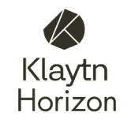 Klaytn Horizon 从未想象过的区块链应用新体验。加入克莱顿地平线，我们的第一场 BAPP 比赛奖池 $1,000,000韩国首尔， 2019年12 月 12 日/美通社/ – 由韩国互
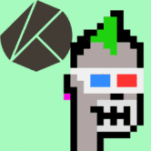 KLAYTN PUNKS HE KLAYTN PUNKS是 ECO 友好型 Klaytn 区块链上 10,000 个算法生成的朋克的独特收藏集合！该系列中的每个朋克都是..THE KLAYTN PUNKS 是 10,000 种算法生成的独特主题朋克，采用定
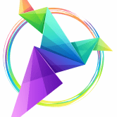 Klever Bank 获得 1.7% 或 2.7% / 天！KleverBank 根据您的储蓄每天自动生成 1.7% 和 2.7% 的利息。您可以每天提取和再投资。当您再投资时，总投资将增加，您将获得更多收
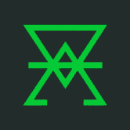 KlimaDao 使用由真实碳资产支持的数字货币 KLIMA 对抗气候变化并获得奖励。KlimaDAO 是新绿色经济的中心。 KlimaDAO 建立在节能的 Polygon 网络之上，使用一系列技术来减少市
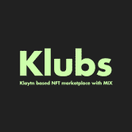 Klubs Klubs 是基于 Klaytn 的具有 MIX 的 NFT 市场。Web+1韩国频道新设。无论我们如何努力开拓海外市场，我们的团队成员都是来自韩国，用韩语与韩国人交流非常重要。W
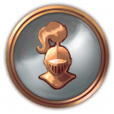 Knights & Peasants 骑士与Peasants 是一款建立在 Harmony 区块链上的中世纪主题 RPG 放置类游戏。它支持一系列功能，例如：单一抵押（银行）、市场、收益农场、托管服务，当
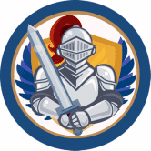 Knights of the Round Table DeFi Knights DeFi 正在为币安智能链上的 DeFi 设定新标准。 我们相信，通过社区、荣誉和诚信，我们可以改变未来其他人处理 DeFi 的方式。 我们的目标如下：我们想要什么：对重
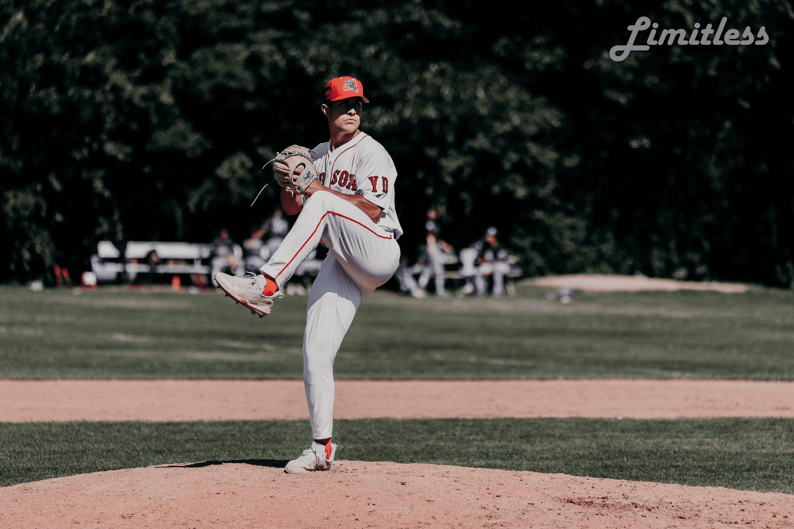 Kris Bow: A Voyage 项目网站、社交联系方式、项目介绍内容详见：https://opensea.io/collection/a-voyage这是 Kris Bow 不断发展的系列
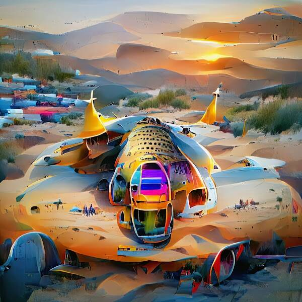 SPACE SHIPS by AI FACTORY 鹰之星球已收到大地之鹰的讯息，他们处于危险之中，需要他们的帮助！我们的 5 位雄鹰英雄已被派往猎鹰翼宇宙飞船去定位地球，并通过保护和保护他们的安
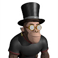 The Apes Together Club Apes Together Club 是为游戏做好准备的 3D NFT 集合。 仅 1,250 只 Apes 限量收藏成为俱乐部的一员。 猿一起强。 欢迎来到 Apes Together Club 俱乐部，这是一个由 220 只肥胖猿组成的部落，他们聚会
Goose Farm Finance 养鹅赚BNB！ 要玩，只需购买一些鹅。 鹅以每只鹅每天一个的速度产蛋。 例如：24 只鹅每天生产 24 个鸡蛋，或每小时 1 个。Goose Finance 已与 Fantom Chain 上的 Opera Swap
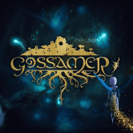 Gossamer Seed 惊喜、冒险和进入新世界的机会等待着持有者。 保持你的萤火虫靠近，它会进化。 . .Gossamer Seed 是 Bron Studios 的一组神秘 NFT，它们存在于以太坊区块链上。 BRON Studios 是一个加
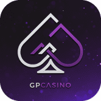 GP Casino GP Casino 正在使用最新的区块链技术来提供有趣、快速、可证明公平和低成本的赌场游戏。 GP Casino 上提供令人兴奋的游戏，例如百家乐、老虎机、轮盘赌和骰子。根据
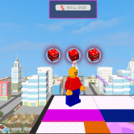 Grapenopoly Play2Earn Grapenopoly - 我们为想要在玩和学习时赚钱的人推出了 NFT 游戏环境。 主要特点： 低买高卖 NFT 资产 赚取被动收入出租物业 进出 NFT - 外部市场 使用加电代币提高您的租金 第 1
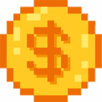 GRB - TRON Lending 糯米饭团是一个开放的 Defi 协议，用于加密存款和借贷服务。获取最重要的 GRB - TRON Lending dApp 指标触手可及 - 分析下面的深度图表，评估 dApp 在不同时间段的活动并做出快
Green Chip Fund 绿筹基金通过买卖量向 GREEN 代币持有者支付 25% 的股息。 相对于 GREEN 流通的总供应量，持有者按比例立即收到他们的 ETH 分红。欢迎来到绿色市政基金的新推特页面！ 关
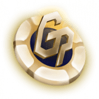 Go Poker Go Poker 是一个基于 EOS.IO 协议的去中心化德州扑克游戏平台。 Go Poker 提供专业水平的游戏体验。 支持的钱包包括 Scatter 和 Token Pocket。GGPoker 是世界上最大的扑
Goblin Finance 在这个基于 Fantom 链的 DeFi 平台上安全赚钱，2021 年最好的链！我们将创建一个安全和自动化的平台，用户可以在该平台上质押他们最喜欢的 LP 来赚取 Gobli
Goblin Wars 向大酋长致敬！ 欢迎来到地精战争！ #BSC 区块链上的#play2earn #NftGaming 游戏！ Goblin Wars 是一款策略、任务导向的游戏，具有生动的经济，灵感来自老式 RPG 和游戏
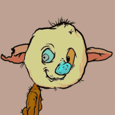 goblintownNFT AAAAAAAUUUUUGGGHHHHH 地精 地精 地精 GOBLINNNNNNNNNns 在地精镇醒来你闻 RATS oooooh 老鼠是 yummmz 这是 BLOKCHIN 上的 NEFTEEE 或 GOBBLINGS 什么？ 哦。 crustybutt goblinking 说 GEE EMMM DEDJEN RUTS 和queenie 说 HLLO SWEATIES 好的，那就是再见我们是被遗忘的妖精
GoBull Swap GoBullSwap - Yield Farming 概念 通过 GoBullSwap 上的 Yield Farming，用户可以利用将他们的加密货币置于赌注中赚取高额利息。 根据 DeFi 分析和排名平台 DeFiPulse 的数据，DeFi 协议在这些
Gods and Legends GNL 是一个成功的 NFT 集合，在多个区块链上得到验证。 WAX 区块链上的顶级多功能集合之一，共有 9 万多个社交媒体关注者。 在短短 9 个月内，它已售出超过 10 万本
Gods Unchained Gods Unchained 是区块链上的 AAA 级游戏，由 Coinbase 等投资者提供支持。 第一季独家卡牌销售现已上线 - 立即拆箱。荣幸和你们见面;我是 Fletch，Gods Unchained 的电子竞技
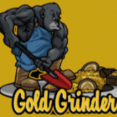 GOLD GRINDER GoldGrinder 是所有 BNB 矿工中改进最多的版本！ 这是一个锁定质押 dapp，可为您提供高达 9% 的投资回报。您还可以获得 12.5% 的推荐奖励。Gold Project 是一个生态系统，拥